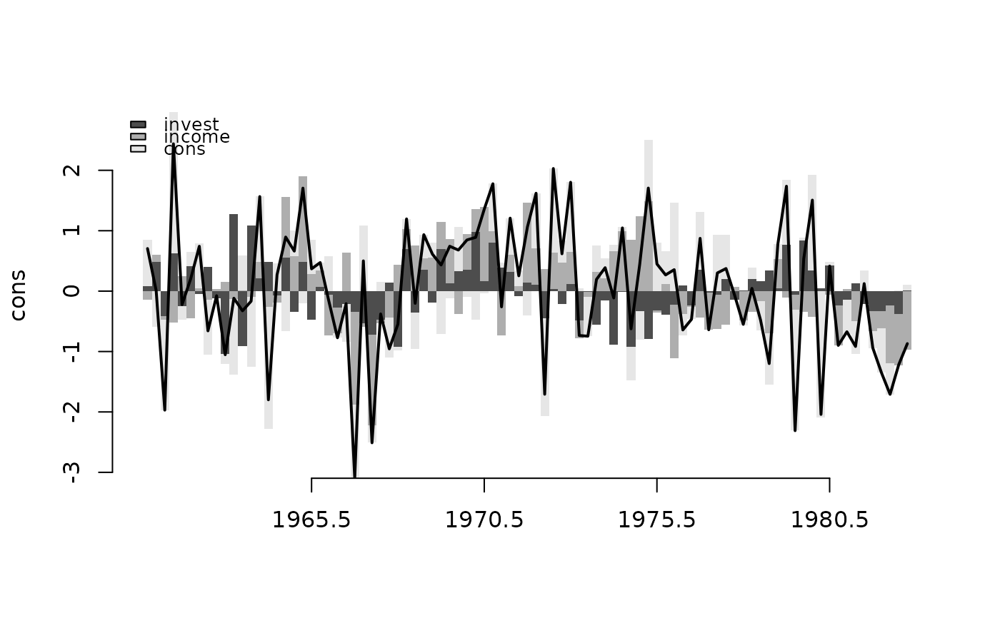

Historical Decomposition of a Vector Autoregressive Model
Source:R/historical_decomposition.R
historical_decomposition.bvarmodel.RdDecomposes the path of a variable over the estimation sample into the contributions of the identified structural shocks and a baseline.
Usage
# S3 method for class 'bvarmodel'
historical_decomposition(
x,
response = NULL,
type = "oir",
impact = NULL,
statistic = "mean",
ci = NULL,
...
)Arguments
- x
an object of class 'bvarmodel' with posterior draws of the coefficients and the error covariance.
- response
name of the variable whose path is decomposed.
- type
the identification:
"oir"(default) for orthogonalised shocks from the Choleski factor of each draw's covariance,"sign"for the rotationsadd_sign_restrictionsoradd_sign_zero_restrictionsstored in the model, and"custom"for impact matrices given inimpact.- impact
for
type = "custom", the impact matrix: one matrix, a list of one matrix per draw, or a function of a draw, as inirf.bvarmodel. Column \(j\) is the impact response to shock \(j\); its column names, where it has any, name the shocks.- statistic
the posterior summary of each contribution,
"mean"(default) or"median". Only the means add up to the data exactly.- ci
an optional probability, the coverage of the credible interval returned alongside, such as
0.68.- ...
further arguments passed to or from other methods.
Value
A time series of class "bvarhd", one row per period of the
estimation sample and one column per shock plus a last column
baseline. With ci, attributes lower and upper
hold the bounds of the credible interval in the same shape. The response
itself is attribute data; for a completed panel it is the sum of the
columns, the posterior mean of the completed series.
Details
With \(u_t = P \epsilon_t\) the reduced form errors and \(\epsilon_t\) the structural shocks, the model's moving average form splits each period's value into $$y_t = b_t + \sum_{j} \sum_{s = 0}^{t - 1} \Phi_s P_{\cdot j} \epsilon_{j, t - s},$$ the contribution of each shock \(j\) over the sample so far plus a baseline \(b_t\): what the lags before the sample, the deterministic terms and the exogenous variables would have produced without any shock. For every draw the shocks are recovered from that draw's residuals and its impact matrix, and the contributions are propagated by the draw's lag coefficients, so that the decomposition carries the posterior uncertainty of all three.
Where the panel was not observed whole (see create_bvarmodel),
each draw is decomposed over its own completed panel, so that the periods
nobody observed are decomposed as the model filled them.
Available for models with constant coefficients, a lag order of at least one and a covariance that does not change over the sample; that excludes time-varying parameters and stochastic volatility, whose impact matrix would differ from period to period, and structural models.
See also
Other post-estimation analysis:
add_sign_restrictions.bvarmodel(),
add_sign_zero_restrictions.bvarmodel(),
fevd.bvarmodel(),
fevd.bvecmodel(),
historical_decomposition(),
irf.bvarmodel(),
irf.bvecmodel(),
multipliers(),
multipliers.bvarmodel(),
multipliers.bvecmodel(),
predict.bvarmodel(),
spillover.bvarmodel(),
spillover.bvecmodel(),
split_quantile_grid(),
vec_to_var.bvecmodel()
Examples
data("e1")
e1 <- diff(log(e1)) * 100
model <- create_bvarmodel(e1, p = 2, iterations = 100, burnin = 50)
model <- add_priors(model, coef = list(v_i = 1, v_i_det = 1 / 10),
sigma = list(df = "k", scale = 1))
model <- add_posterior_coefficients(add_initial_values(model))
hd <- historical_decomposition(model, response = "cons")
plot(hd)
